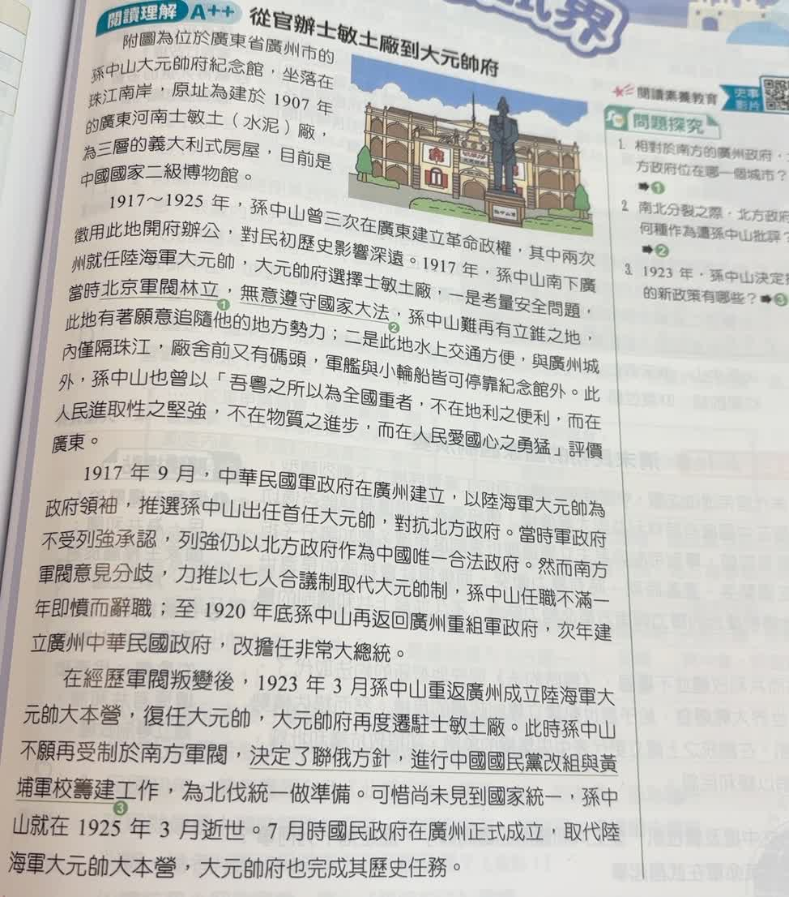
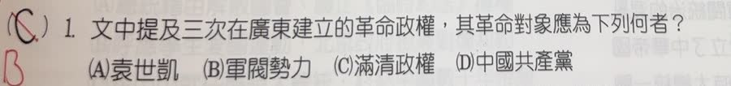

分享原卷｜第 1 題
完整原題
作答所需文章／材料
【從官辦士敏土廠到大元帥府】 附圖為位於廣東省廣州市的孫中山大元帥府紀念館，坐落在珠江南岸，原址為建於1907年的廣東河南士敏土（水泥）廠，為三層的義大利式房屋，目前是中國國家二級博物館。 1917～1925年，孫中山曾三次在廣東建立革命政權，其中兩次徵用此地開府辦公，對民初歷史影響深遠。1917年，孫中山南下廣州就任陸海軍大元帥，大元帥府選擇士敏土廠，一是考量安全問題，當時北京軍閥林立，無意遵守國家大法，孫中山難再有立錐之地，此地有著願意追隨他的地方勢力；二是此地水上交通方便，與廣州城內僅隔珠江，廠舍前又有碼頭，軍艦與小輪船皆可停靠紀念館外。此外，孫中山也曾以「吾粵之所以為全國重者，不在地利之便利，而在人民進取性之堅強，不在物質之進步，而在人民愛國心之勇猛」評價廣東。 1917年9月，中華民國軍政府在廣州建立，以陸海軍大元帥為政府領袖，推選孫中山出任首任大元帥，對抗北方政府。當時軍政府不受列強承認，列強仍以北方政府作為中國唯一合法政府。然而南方軍閥意見分歧，力推以七人合議制取代大元帥制，孫中山任職不滿一年即憤而辭職；至1920年底孫中山再返回廣州重組軍政府，次年建立廣州中華民國政府，改擔任非常大總統。 在經歷軍閥叛變後，1923年3月孫中山重返廣州成立陸海軍大元帥大本營，復任大元帥，大元帥府再度遷駐士敏土廠。此時孫中山不願再受制於南方軍閥，決定了聯俄方針，進行中國國民黨改組與黃埔軍校籌建工作，為北伐統一做準備。可惜尚未見到國家統一，孫中山就在1925年3月逝世。7月時國民政府在廣州正式成立，取代陸海軍大元帥大本營，大元帥府也完成其歷史任務。文中提及三次在廣東建立的革命政權，其革命對象應為下列何者？
(A) 袁世凱
(B) 軍閥勢力
(C) 滿清政權
(D) 中國共產黨
先想一想，再查看答案、解說與原圖
原卷作答：C
正確答案：B。文章提到北方軍閥破壞法統，也提及南方軍閥牽制孫中山，指向軍閥勢力。
逐項解析
| 選項與原句 | 判讀 | 句意與判斷理由 |
|---|---|---|
| (A) 袁世凱 | 不選 | 袁世凱於1916年去世，不能作為1917～1925年三次建政共同的對抗對象。 |
| (B) 軍閥勢力 | 應選 | 文章提到北方軍閥破壞法統，也提及南方軍閥牽制孫中山，指向軍閥勢力。 |
| (C) 滿清政權 | 不選 | 清帝1912年退位，本題限定的是民國成立後，不是清末反清革命。 |
| (D) 中國共產黨 | 不選 | 這段時期籌備北伐、改組國民黨的對象是軍閥，不能套用後來的國共對立。 |
詳細說明與解題步驟
一、先把年代圈出來
文章明定1917～1925年，已在清帝1912年退位、袁世凱1916年去世之後。因此不能看到孫中山革命，就直接選滿清或袁世凱。
二、回文章找對抗對象
前段說北京軍閥林立，不遵守國家大法；中段說廣州軍政府對抗北方政府；末段又說孫中山不願再受制於南方軍閥，準備北伐統一。三處共同指向B軍閥勢力。
三、分清同一人物的不同時期
清末革命以推翻清朝為目標，民初孫中山又曾反袁，後來護法、籌備北伐則處理軍閥割據。人物相同，不表示各次行動的對抗對象都相同。
作答順序：年代1917～1925 → 清朝、袁世凱已不在 → 用文章的北方及南方軍閥線索確認B。
核對註記：已核對題幹、全部選項與必要材料；教材對應課次未確認，歸綜合。
原圖（僅本題）

